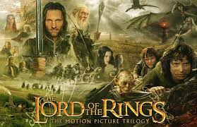

Release Year - 2013
Director - Richard Curtis
Cast - Domhnall Gleeson || Rachel McAdams || Bill Nighy
Release Year - 2013
Director - Richard Curtis
Cast - Domhnall Gleeson || Rachel McAdams || Bill Nighy
About Time is a romantic movie that gives away a very beautiful life lesson.
Watch Traliler!!

Release Year - 2003
Director - Peter Jackson
Cast - Don't Remember
Lord Of The Rings is a high fanatsy saga based on J.R.R.Tolkien's famous work by the same name.
Watch Traliler!!
Release Year - 1999
Director - James Cameron
Cast - Leonardo De Caprio, Kate Winselet
Titanic is period drama which focuses on a love story taking place in the backdrop of Titanic Sinking.
Watch Traliler!!